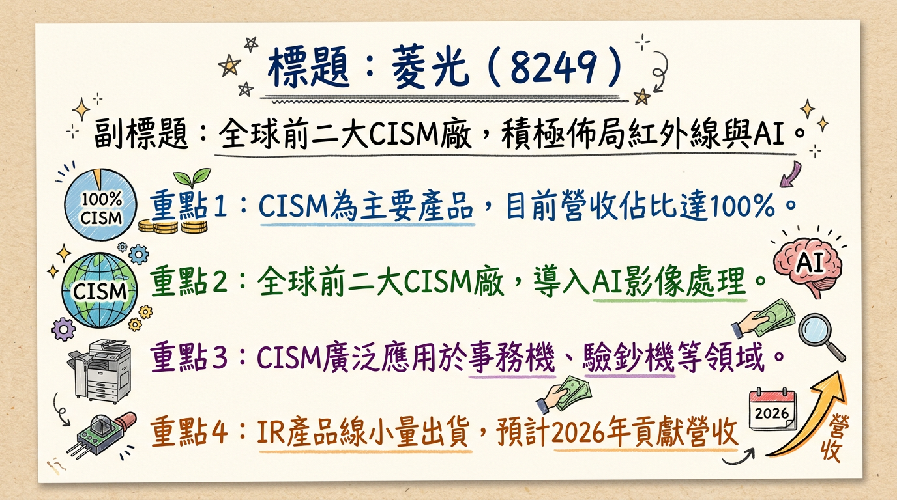
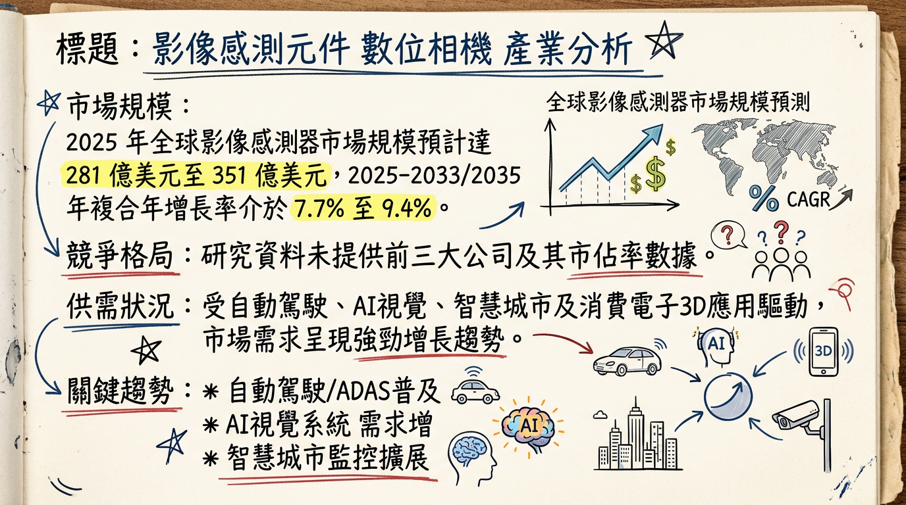
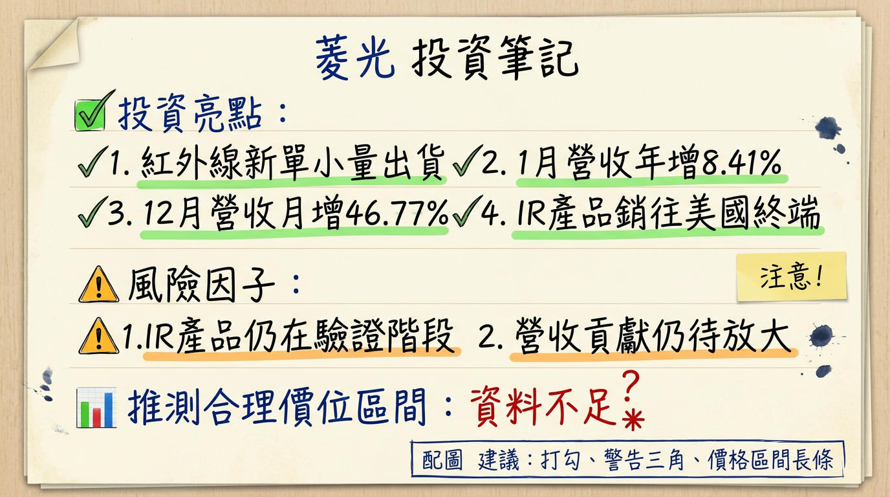

菱光為全球領先之接觸式影像感測模組(CISM)供應商，正積極轉型切入高成長的AI紅外線影像模組市場，其新產品線已進入出貨與驗證階段，預計2026年將貢獻顯著營收，結合其CISM在事務機領域的穩固市佔，有望帶動公司整體獲利續創新高。然而，傳統事務機市場復甦前景不明及新產品驗證時程仍需留意。
菱光科技股份有限公司及其子公司（合稱「本集團」）主要從事電子零組件的製造及買賣。公司的核心產品是接觸式影像感測模組 (CISM)，廣泛應用於影印機、掃描器、多功能事務機、指紋辨識機及驗鈔機等。菱光在全球CISM市場中位居領導地位，是全球最大或前兩大製造商之一。
近年來，菱光積極拓展產品線，切入紅外線 (IR) 應用相關領域，開發具備AI影像處理功能的紅外線成像模組。這些高階模組主要鎖定無人機、安防監控、商用紅外線檢測系統、機器人及海事等新興應用市場，並已開始小量出貨及驗證。
營收結構 (2025年最新數據)| 業務類別 | 佔比 | 應用領域 | 備註 |
|---|---|---|---|
| 影像感測器(CISM) | 100% | 影印機、掃描器、多功能事務機、指紋辨識機、驗鈔機 | 全球最大或前兩大CISM製造商，事務機市佔超過40% |
| 紅外線(IR)產品線 | 低於5% (預計) | 無人機、安防監控、商用紅外線檢測、機器人、海事 | 已小量出貨驗證，預計2026年顯著貢獻營收 |
菱光的生產基地主要位於中國的無錫廠和南昌廠。為因應國際貿易情勢與地緣政治變化帶來的供應鏈風險，公司正積極規劃設立第二生產基地。
| 月份 | 金額 (億元) | 月增率 MoM | 年增率 YoY |
|---|---|---|---|
| 2026年01月 | 4.11 | 3.91% | 8.41% |
| 2025年12月 | 3.96 | 46.77% | 24.99% |
| 2025年11月 | 2.70 | -8.56% | -41.71% |
| 2025年10月 | 2.95 | 4.12% | -29.28% |
| 2025年09月 | 2.83 | 0.19% | -24.79% |
| 2025年08月 | 2.83 | 18.81% | -40.96% |
* 全年EPS：新台幣 3.27 元
* 全年營收：新台幣 37.21 億元 (累計至12月)
| 券商名稱 | 目標價 (新台幣) | 評等 | 日期 |
|---|---|---|---|
| 未找到 | 未找到 | 未找到 | 未找到 |
| 未找到 | 未找到 | 未找到 | 未找到 |
| 未找到 | 未找到 | 未找到 | 未找到 |
法人機構在2026年1月30日的報導中指出，看好菱光2026年全年EPS可望持續獲利達新台幣3.60元左右。截至目前，未找到2025年全年最終的EPS預估或實際公布數字。
評等調升/調降：目前未找到2025-2026年券商對菱光（8249）有重大調升/調降評等的相關資料。
| 年度/季別 | 毛利率 | 營業利益率 | 稅後淨利率 |
|---|---|---|---|
| 2025 Q3 | 19.49 | 4.95 | 23.07 |
| 2025 Q2 | 20.98 | 8.00 | 12.38 |
| 2025 Q1 | 22.10 | 13.88 | 10.05 |
| 2024 Q4 | 20.92 | 12.35 | 5.13 |
| 2024 Q3 | 20.91 | 11.72 | 16.86 |
| 2024 Q2 | 21.39 | 12.56 | 5.54 |
| 2024 Q1 | 17.23 | 7.81 | 3.52 |
| 2023 Q4 | 17.97 | 3.50 | 0.20 |
| 2023 Q3 | 18.52 | 6.10 | 19.67 |
| 2023 Q2 | 19.75 | 9.13 | 5.95 |
| 2023 Q1 | 18.47 | 10.19 | 5.28 |
2025年上半年，菱光受惠於終端市場需求復甦及新興產品線訂單斬獲，帶動營收與毛利率同步提升。此趨勢主要歸因於2024年上半年市場仍處於庫存調節低谷，基期較低。然而，2025年下半年受美國新對等關稅政策預期衝擊終端消費市場影響，公司對主力CISM業務看法轉趨保守，為全年營運帶來不確定性。
儘管如此，菱光積極布局的紅外線成像技術 (iR) 已切入高階應用並取得小批量訂單，法人評估這有機會成為未來成長主軸。特別是2025年Q3稅後淨利率顯著提升至23.07%，高於營業利益率4.95%，顯示業外收入對當季獲利有較大貢獻 (業外收支/營收比率達19.76%)，但具體業外項目未詳細說明。
2025年上半年營收與毛利率提升，部分原因為2024年上半年處於庫存調節低谷，顯示當時可能存在較高的存貨。目前並無明確資料指出2024年以後有異常堆積或備料現象。
目前未找到2024-2026年具體的資本支出金額與趨勢。然而，公司正積極規劃第二生產基地，以因應國際貿易與地緣政治風險，此舉暗示未來資本支出將會增加。具體的選址與時程進度仍需持續追蹤。
| 產業類別 | 2024年市場規模 | 2025年市場規模 | 2026年市場規模 | CAGR (預測期間) | 主要成長動能 |
|---|---|---|---|---|---|
| 影像感測器 | - | 281-351億美元 | 304.7-309.4億美元 | 7.7%-9.4% (2025-2033/35) | 自動駕駛、AI視覺、智慧城市、3D應用 |
| CMOS影像感測器(CIS) | - | ~180億美元 (約1304億人民幣) | - | 1.9% (2026-2032) | 智慧型手機、汽車系統、醫療、安全 |
| 接觸式影像感測模組(CISM) | 6.37億美元 | 6.72億美元 | - | 5.2% (2025-2031) | 緊湊掃描方案需求 |
| 紅外線成像模組(IR Imaging Module) | - | 84.7-98.5億美元 | 89億美元 | 5.80%-7.7% (2026-2034/37) | 安全監控、工業檢測、無人機、國防 |
目前影像感測器、CISM及紅外線成像模組市場並未明確指出供過於求或供不應求。然而，從上述市場規模持續增長及主要成長驅動因素來看，需求呈現穩定上升趨勢，尤其是在緊湊掃描方案、高解析度成像以及惡劣環境下的監控檢測需求驅動下。
產業平均毛利率水準：目前未找到2024年以後影像感測器、CISM或紅外線成像模組產業的平均毛利率水準。
| 公司名稱 | 產品/市場領域 | 最新市佔率/相關資訊 (資料年份) |
|---|---|---|
| 影像感測器市場 | ||
| Sony | CMOS 影像感測器 | 領頭羊 (2020年佔40%) |
| Samsung | CMOS 影像感測器 | 2020年佔22% |
| OmniVision | CMOS 影像感測器 | 2020年佔12% |
| Smartsens | CMOS 影像感測器 (中國廠商) | 2024年營收同比增長105.7% |
| 接觸式影像感測模組 (CISM) | ||
| 菱光 (8249) | CISM | 全球最大或前兩大製造商，事務機市佔逾40% |
| Mitsubishi Electric | CISM | 關鍵參與者，技術領先 |
| Canon | CISM | 關鍵參與者，技術領先 |
| 紅外線成像模組 (IR Imaging Module) | ||
| 菱光 (8249) | IR Imaging (無人機、安防、檢測) | 已導入AI影像處理，切入高階應用 |
| Teledyne (含FLIR Systems) | IR Imaging | 北美市場主導者 |
| L3Harris | IR Imaging | 北美主要業者 |
| Hikvision (海康威視) | IR Imaging (中國) | 中國重要 OEM |
| Guide Infrared (高德紅外) | IR Imaging (中國) | 中國重要 OEM |
* AI影像處理的競爭優勢： 菱光在IR模組中導入AI，有助於其在高階利基市場建立技術差異化。
* CISM市場的穩固地位： 穩定的CISM業務可提供公司現金流，支持新業務發展。
* 新興應用場景拓展： CISM應用於指紋/驗鈔，IR成像切入無人機、機器人、ADAS等，拓寬市場。
* 高製造與研發成本： 高階感測器開發資本密集，新興IR領域投入較大，可能面臨成本壓力。
* 供應鏈壁壘與標準化挑戰： 產業鏈高度集中且技術壁壘高，核心設備受少數海外企業壟斷。
* 技術快速迭代壓力： 影像感測器技術發展迅速，要求廠商不斷創新以避免產品淘汰。
* 2025年12月2日： IR產品已切入無人機、安防監控、機器人、工業檢測、海事等高階應用並取得小批量訂單。無人機產品已透過中國大陸及東南亞組裝廠銷往美國終端客戶，顯示國際市場認可度。
* 2026年2月11日： 菱光新產品符合美國國防授權法（NDAA）非中國製零組件標準，提升國際競爭力。
* 2026年1月營收表現： 2026年1月合併營收為新台幣4.11億元，月增率3.91%，年增率8.41%，創七年單月營收同期新高。
* 2025年獲利表現： 2025年第三季EPS為1.73元，2025年第一季至第三季累計EPS達3.8元，已超越2024年全年EPS 3.27元。法人看好2026年全年EPS可望達3.60元左右。
* 第二生產基地規劃： 為因應國際貿易情勢及地緣政治變化，公司正規劃第二生產基地以分散供應鏈風險。
* 事務機市場復甦不明朗： 管理層坦言短期內事務機市場復甦前景不明朗，競爭加劇將持續壓抑需求。IDC預測整體事務機市場數量將維持微幅下調趨勢，與公司樂觀看待維持穩定的說法略有出入。
* 紅外線產品驗證期長： 高階紅外線應用產品需要較長驗證時間，專案導入期程相對較長，可能影響營收貢獻的時程。
* 大股東處分持股： 東安投資於2024年9月2日公告，擬於2024年12月2日至2025年6月30日期間，以每股不低於新台幣55元處分菱光科技全數持股。
| 時間點 | 成長動能 | 具體內容 |
|---|---|---|
| 2025年起 | 新產品線佈局與驗證 | 紅外線（IR）產品線進入小量出貨、驗證階段，鎖定無人機、安控、工業檢測等高階應用，導入AI影像處理功能。 |
| 2025年Q3 | 獲利能力顯著提升 | 累計EPS已達3.81元，超越2024年全年水準，顯示營運回溫及新產品貢獻初步成果。 |
| 2025年12月-2026年 | 擴展新客戶與新市場 | IR產品已透過中國大陸及東南亞組裝廠銷往美國終端客戶，證明國際市場競爭力；符合NDAA標準。 |
| 2026年起 | 紅外線產品線營收顯著貢獻 | 公司預期2026年IR產品線將迎來更顯著的營收貢獻，成為未來營運成長的核心動能。 |
| 2026年 | 法人預期獲利成長 | 法人機構看好2026年全年EPS可望持續獲利達3.60元左右。 |
| 未來持續追蹤 | 第二生產基地規劃與產能擴充 | 為因應地緣政治與供應鏈風險，公司持續評估第二生產基地，未來有望提升產能並分散風險。 |
| 未來持續追蹤 | 高景深CISM模組佈局 | 高階商用影印機所需「高景深掃描模組」是新的佈局重點，可望拓展CISM產品應用範疇。 |
綜合以上分析，菱光(8249)正處於關鍵的轉型期，傳統CISM業務雖面臨挑戰，但其在全球的領導地位仍提供穩固基礎。真正的成長催化劑將來自其積極佈局的AI紅外線影像模組。
本報告由 AI 自動產生，資料來源為公開網路資訊，僅供參考，不構成投資建議。產生時間：2026-03-06 00:19


